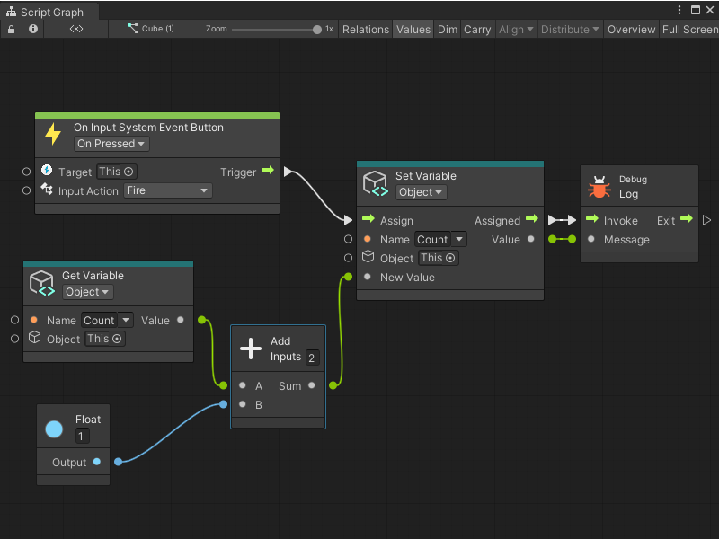

On Input System Event Button node¶
[!NOTE] The On Input System Event Button node [!includenodes-note-package]
The On Input System Event Button node listens for a specific Input Action from a Player Input component. It doesn’t send or read any other data.
Use this node when you want to read user input but don’t require any other data from an Input Action.

Fuzzy finder category¶
The On Input System Event Button node is in the Events > Input category in the fuzzy finder.
Inputs¶
The On Input System Event Button [!includenodes-inputs]
[!includenodes-input-system-ports]
Controls¶
The On Input System Event Button [!includenodes-controls]
[!includenodes-input-action-change]
You can also set this control from the Graph Inspector.
Additional node settings¶
The On Input System Event Button [!includenodes-additional-settings]
| Name | Type | Description |
|---|
Outputs¶
The On Input System Event Button [!includenodes-single-output]
| Name | Type | Description |
|---|
Example graph usage¶
In the following example, an On Input System Event Button node counts how many times the user has pressed a button from the Fire Input Action and logs the result to the console.
When a user presses a button associated with the Fire Input Action, Visual Scripting gets the current value of the Count Object variable with a Get Variable node. The Get Variable node sends Count’s current value to an Add Inputs node’s A port. Then, the Float literal node sends a value of 1 to the Add Inputs node’s B port.
The On Input System Event Button node triggers the Set Variable node and assigns the value from the Add Inputs node’s Sum port as the New Value of Count. The Set Variable node logs the value of Count to the console with the Debug Log node:
